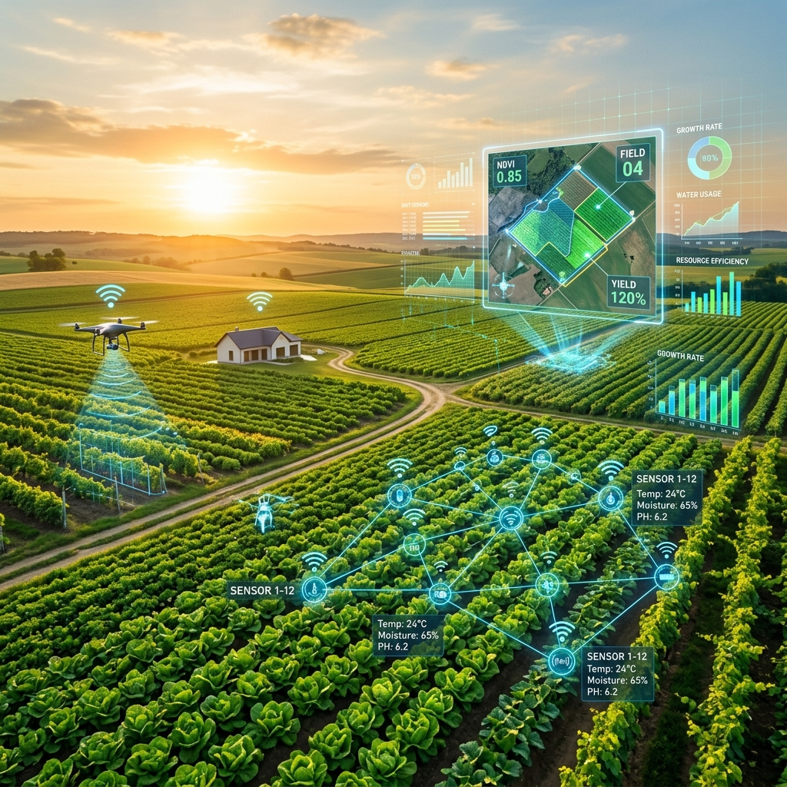
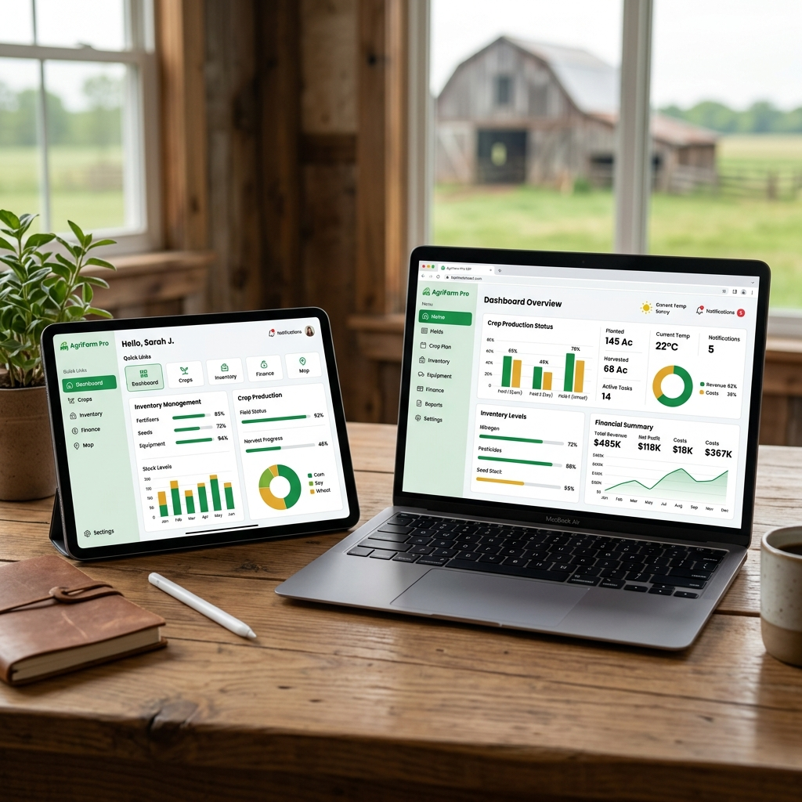
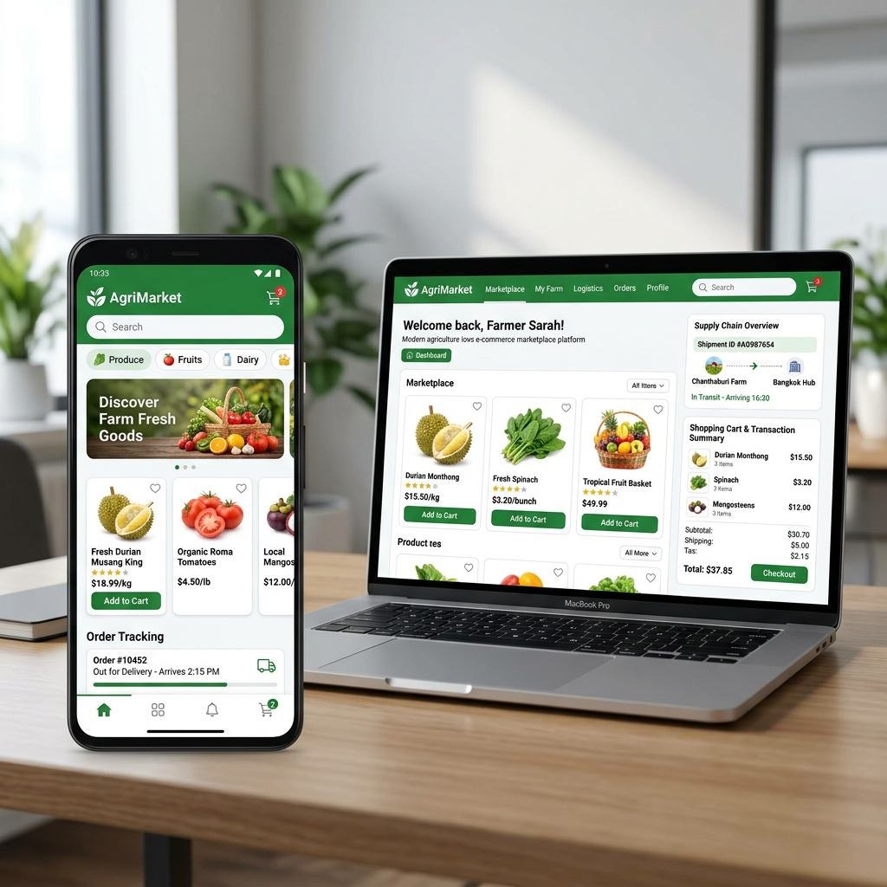
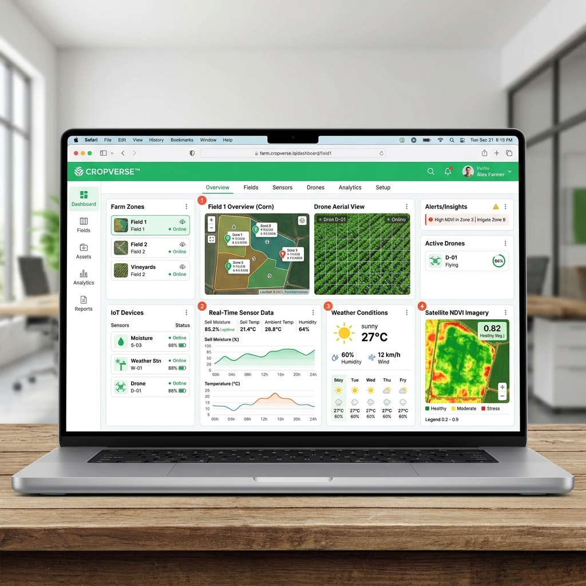
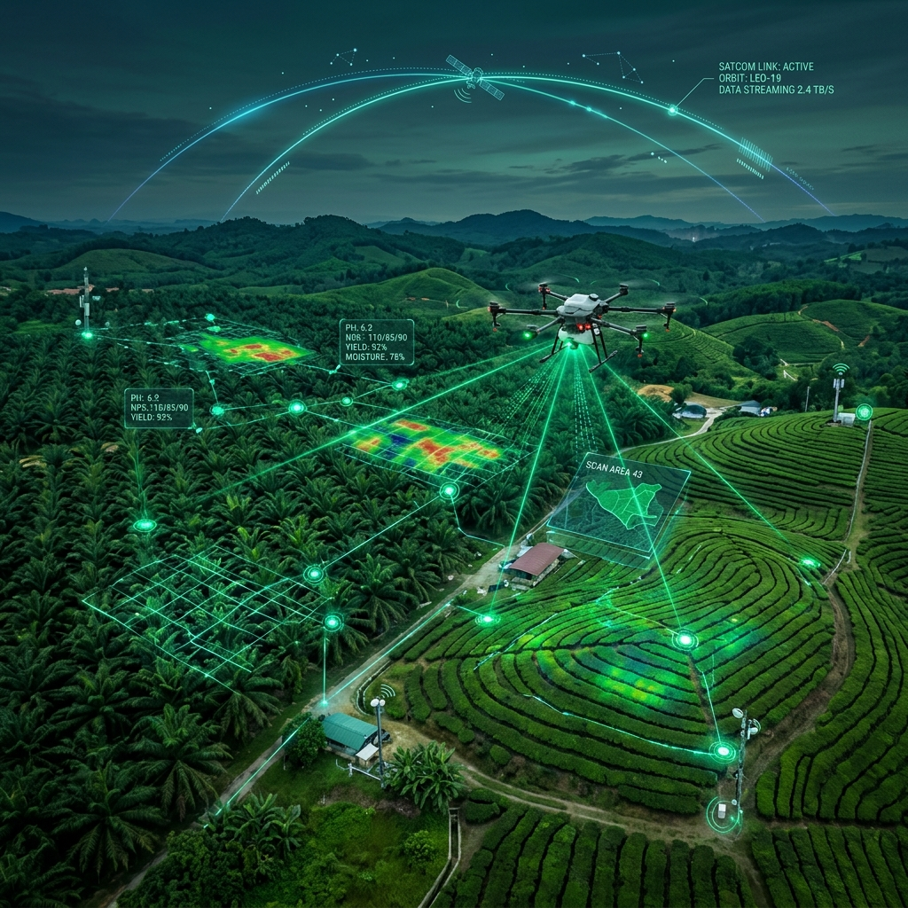

Kami adalah Agrotech, penyedia solusi teknologi pertanian berbasis Cloud SaaS di Indonesia, membantu petani dan agribisnis bertani lebih cerdas, meningkatkan profitabilitas, dan bertransisi menuju pertanian modern.

Perusahaan Pengguna
Hektar Lahan Terkelola
Pengguna Aktif
Sederhanakan operasi pertanian dengan sistem ERP komprehensif kami. Kelola sumber daya, tugas, inventaris, dan keuangan secara efisien untuk produktivitas pertanian yang optimal.


Tingkatkan perdagangan hasil tani dengan platform marketplace. Kelola pengadaan, penjualan, inventaris, dan distribusi secara efisien untuk transaksi agro-komoditas yang sukses.
Revolusikan pertanian dengan smart farming. Manfaatkan IoT, analisis data, dan otomasi untuk budidaya presisi, efisiensi sumber daya, dan hasil panen lebih tinggi.

Dengan antarmuka yang user-friendly dan dukungan berkelanjutan, kami memastikan transisi yang mulus ke solusi ERP kami tanpa kompleksitas.
Kami membuat aplikasi offline untuk memastikan akses tanpa gangguan ke data dan fungsionalitas kritis, bahkan tanpa koneksi internet.
Data Anda aman bersama kami! Kami melakukan backup data secara rutin untuk memitigasi dampak bencana dan meminimalisir risiko kehilangan data.
Kami mengenkripsi data Anda untuk melindungi informasi sensitif dari akses yang tidak sah dan ancaman keamanan siber.
Sistem kami dengan mulus melakukan scaling untuk memenuhi kebutuhan bisnis yang berkembang sambil mempertahankan performa puncak.

Di Agrotech, kami berdedikasi pada prinsip Environmental, Social, dan Governance (ESG), didorong oleh komitmen kami terhadap keberlanjutan dan praktik bisnis yang bertanggung jawab.
Solusi teknologi kami mempromosikan pertanian yang efisien sumber daya, mengurangi dampak lingkungan dan mendukung netralitas karbon.
Kami memberdayakan petani lokal melalui teknologi dan perdagangan yang adil, mendorong pertumbuhan ekonomi inklusif.
Kami menjalankan tata kelola perusahaan yang transparan, beretika, dan bertanggung jawab dalam setiap operasi bisnis.
Hubungi tim konsultan kami untuk menjadwalkan demo dan konsultasi gratis tentang bagaimana Agrotech dapat membantu bisnis pertanian Anda.